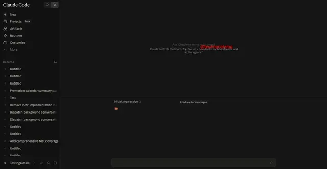

#リーク情報
Anthropicが「Hub Mode」をテスト、Claudeの複数サブエージェント管理機能か

Anthropicが、Claudeのモバイルアプリで「Hub Mode」と呼ばれる新機能を内部テストしていることが確認されました。現時点では正式提供されておらず詳細も不明ですが、複数のサブエージェントを一元管理し、タスク進行を可視化するためのインターフェー…
一次情報（出典） testingcatalog.com
#リーク情報

Anthropicが、Claudeのモバイルアプリで「Hub Mode」と呼ばれる新機能を内部テストしていることが確認されました。現時点では正式提供されておらず詳細も不明ですが、複数のサブエージェントを一元管理し、タスク進行を可視化するためのインターフェー…
一次情報（出典） testingcatalog.com